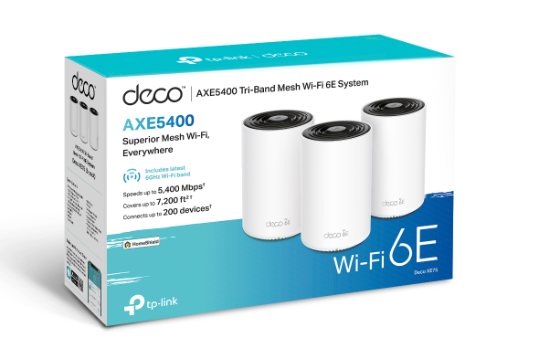

Guide · Networking
The best mesh Wi-Fi system for a smart home (2026)
A smart home with fifty-plus devices — sensors, plugs, bulbs, cameras and a Home Assistant box — does not care about headline throughput. It cares that the 2.4 GHz band is stable, that nothing disappears when an access point reboots, and that the network keeps working when the vendor's app cannot reach the internet. The best mesh Wi-Fi system for that job is a mid-range, tri-band kit with wired backhaul support: our pick is the TP-Link Deco XE75. If you would rather own the firmware, a small cluster of OpenWrt routers running batman-adv does the same job with no cloud path at all. Here is how the two approaches compare, and which to pick.

What "best" means when half your devices are on 2.4 GHz
A mesh system is one network spread across several access points in different rooms. The nodes talk to each other over a dedicated link — wireless backhaul, or Ethernet backhaul where you have cable — and clients move between them under a single SSID. That is the honest difference from a Wi-Fi extender: an extender is one repeater bridging a second, typically halved-throughput network, while a mesh coordinates all nodes together.
For a house running Home Assistant, the spec sheet numbers that matter are not the 6 GHz totals. They are:
- Band splitting. Tri-band systems keep a dedicated 5 GHz leg for backhaul, so 2.4 GHz IoT clients are not competing with your laptop for airtime. Per TP-Link, the Deco XE75 distributes devices across its 6 GHz, 5 GHz and 2.4 GHz bands with 2×2 MU-MIMO and OFDMA.
- Wired backhaul option. Pulling the node-to-node traffic off the air is the single biggest stability upgrade for a densely populated network.
- Capacity for many clients. TP-Link rates the Deco XE75 3-pack at up to 200 connected devices — a vendor figure, but the right order of magnitude for coverage of a large house (7,200 ft² claimed for three units).
Our pick: TP-Link Deco XE75
The Deco XE75 is a Wi-Fi 6E tri-band kit sold as a 1-, 2- or 3-pack. From TP-Link's US product page, per the spec sheet:
| Spec | Deco XE75 |
|---|---|
| Class | AXE5400 tri-band Wi-Fi 6E |
| Band rates | 6 GHz 2402 Mbps (HE160); 5 GHz 2402 Mbps (HE160); 2.4 GHz 574 Mbps |
| Pack options / coverage | 1/2/3-pack; 3-pack rated to 7,200 ft², up to 200 devices (vendor figure) |
| Backhaul | Wireless mesh or optional Ethernet backhaul (TP-Link Mesh Technology) |
| Ports | 3× Gigabit per unit |
| Radio features | 2×2 MU-MIMO, OFDMA, internal 4× high-gain antennas; AI-Driven Mesh for client steering |
| Working modes | Router Mode and Access Point Mode (can sit behind an existing router) |
| Security | WPA3-Personal/WPA2; HomeShield suite with real-time IoT protection and IoT device isolation; separate guest SSIDs on 2.4/5/6 GHz |
| VPN | OpenVPN, PPTP, L2TP/IPSec client and server built in |
Four things make it the default pick for an automation-heavy house. First, Access Point Mode means it can sit behind your existing router or gateway — your Home Assistant box and any wired VLAN router stay in place. Second, the IoT device isolation feature means you can wall sensors off from cameras and NAS boxes without building the VLAN yourself. Third, guest SSIDs are separate per band, which helps when you hand out credentials to devices that will only ever speak 2.4 GHz. Fourth, OpenWrt official builds exist for several Deco models, which is your escape hatch if the cloud management path annoys you later — see below.
The catch, and it deserves plain words: setup and management run through the Deco app and a TP-Link ID, with firmware updating over TP-Link cloud. The client traffic itself stays on your LAN, but the management path is a cloud one. If you want nothing in the house to phone home, the DIY option at the end of this page is the fit. Check TP-Link Deco XE75 on Amazon for current pack options and stock.
Eero, Orbi and the rest
Amazon's eero line and Netgear's Orbi line are the other names in this category, and both are fine engineering. We are not quoting spec numbers for either here: at press time eero's product pages and support spec pages would not serve for verification, and Netgear's Orbi pages returned errors or JavaScript-only shells. We will not put a number on a page we cannot trace. Both manage their systems through vendor apps and accounts, the same cloud pattern as Deco. If you buy one, the same criteria apply: prefer tri-band with wired backhaul, and check whether an extender-style satellite can be set as dumb as you want it.
Wired backhaul: the upgrade that matters
If your house has Ethernet to a few rooms, use it. Put one mesh node where the modem is and one per wing or floor on wire. What changes for a smart home:
- The 5 GHz band stops carrying node-to-node traffic, so Wi-Fi cameras and streaming clients get the airtime they kept eating.
- A node that loses its wireless backhaul link stops taking half your IoT clients down with it.
- Latency for device control becomes one hop for anything near a wired node, which is noticeable in camera streams and Matter-over-Wi-Fi pairing.
On the Deco XE75, wired backhaul is supported but optional — no rewiring required if only some rooms are cabled. On the DIY side below, it is simply how Ethernet works.
Flashing OpenWrt on commercial mesh hardware
You do not have to abandon the Deco form factor to get open firmware. Official OpenWrt builds exist for several mesh-family devices, refreshed as of 9 November 2026:
- TP-Link Deco M4R v1 (ath79): official builds for both the current stable 25.12.6 and oldstable 24.10.8. Firmware selector entry; OpenWrt device page.
- TP-Link Deco M4R v4 (ramips/mt7621): same release coverage. Firmware selector entry.
- TP-Link Deco S4 v2 (ath79): 24.10.8 and 25.12.6. Firmware selector entry; OpenWrt device page.
- TP-Link Deco X80-5G (qualcommax/ipq807x): 25.12.6 only. Firmware selector entry.
There are no official OpenWrt builds for eero or Netgear Orbi hardware. That is the difference between a locked mesh and one you can convert: buy the Deco form factor and you keep the option. Match the hardware version on the label before you flash — a v1 image on a v4 unit is how bricks happen. Flashing removes the Deco app and cloud management entirely; everything is configured through LuCI or config files.
The DIY route: OpenWrt nodes and batman-adv
The fully open alternative is two to four inexpensive OpenWrt routers acting as dumb APs, with the mesh layer handled by batman-adv — a Layer-2 mesh routing protocol that runs in the Linux kernel, so nodes find each other and route around a dead node without a vendor app. The how-to lives in the OpenWrt mesh documentation at openwrt.org/docs/guide-user/network/wifi/mesh/batman; note the docs site currently sits behind a bot check, so open it in a normal browser. For the underlying router choice, see our guide to the best OpenWrt router.
Candidate nodes from the official-builds device database:
- Xiaomi Mi Router AX3000T (mediatek/filogic): official builds for 24.10.8 and 25.12.6. The inexpensive AX3000-class node — buy three, flash three. Firmware selector entry; OpenWrt device page. Check Xiaomi AX3000T on Amazon for current stock.
- Linksys Velop MX4200 v1/v2 (qualcommax/ipq807x): tri-band AX4200, built as a mesh system from the factory, now with official 24.10.8 and 25.12.6 builds. Firmware selector entry; OpenWrt device page. Check Linksys MX4200 on Amazon for current stock.
- Linksys MX4300 (qualcommax/ipq807x): 24.10.8 and 25.12.6. Firmware selector entry.
- Linksys MX6200 (qualcommax/ipq50xx): 25.12.6 only. Firmware selector entry.
What you gain: no cloud account anywhere in the chain, VLANs enforced per SSID in the router firmware (useful for parking IoT on its own segment — see our IoT VLAN guide), and firmware updates that come from the OpenWrt project, not a vendor. What you give up: hand-holding. Band steering, channel choice and the 2.4 GHz SSID setup are on you, and the mesh is wired-backhaul-first in practice — batman-adv over 5 GHz wireless works but costs you tuning time. If the whole house runs on one box already, the honest answer is that you may not need a mesh at all; read the coverage questions in the OpenWrt guide first.
Keeping fifty IoT devices happy
Whichever route you take, the failures we hear about are the same three:
- Battery sensors dropping off. 2.4 GHz-only end devices latch onto a node and will not roam even when a nearer node outperforms it. Put your IoT SSID on an access point placed near the sensor cluster, or accept a weak-but-stable association. Both Deco's IoT isolation SSIDs and a dedicated 2.4 GHz SSID on OpenWrt solve this the same way: fewer, stabler choices per client.
- Wi-Fi cameras saturating the backhaul leg. On wireless backhaul, cameras pull several Mbps each through the node-to-node link. This is the case where Ethernet backhaul stops being optional.
- Auto-channel churn. Consumer firmware hopping channels can momentarily strand 2.4 GHz clients. Locking channels fixes it on either platform.
In short: buy the Deco XE75 if you want the appliance experience with a cloud app, and buy the escape hatch of OpenWrt-flashing the Deco family later. Build three AX3000T or MX4200 nodes on batman-adv if local-only is the requirement. Either way, wire the backhaul where you can.
FAQ
Do I need Wi-Fi 6E or Wi-Fi 7 for a smart home, or is Wi-Fi 6 enough for 50 IoT devices?
Wi-Fi 6 is usually enough. Most battery IoT devices are 2.4 GHz-only and never touch 5 or 6 GHz. A Wi-Fi 6E system such as the TP-Link Deco XE75 is nice headroom, but the deciding factors for a smart home are band steering, wired backhaul and 2.4 GHz stability.
Is Ethernet backhaul worth it for a mesh system with many IoT devices?
Yes, where you already have cable. Wired backhaul frees the 5 GHz band for clients and removes the wireless hop between nodes. The Deco XE75 supports optional Ethernet backhaul; every OpenWrt mesh node supports it natively.
Can I flash OpenWrt on a mesh system like a Deco?
On some models, yes. Official OpenWrt builds exist for the TP-Link Deco M4R v1 and v4, Deco S4 v2 and Deco X80-5G. There are no official builds for eero or Netgear Orbi hardware.
What is the difference between a mesh system and a Wi-Fi extender?
A mesh system is one network with several coordinated access points that hand clients between nodes under one SSID. A single-band extender is a separate repeater that halves throughput on the leg it bridges, usually forcing you to manage two networks.
Do Deco, eero and Orbi require a cloud account to work?
Deco setup and management run through the Deco app and a TP-Link ID, with firmware updating over TP-Link cloud. eero and Orbi also manage their systems through vendor apps and accounts. Once configured, wired client traffic itself stays local — but management is a cloud path.
Which keeps 2.4 GHz-only IoT devices more stable: commercial mesh or OpenWrt?
Per the spec sheets, commercial mesh vendors bake band steering and band-splitting into the firmware, which handles 2.4 GHz IoT gracefully without tuning. On OpenWrt you control it yourself: fixed channels, a separate 2.4 GHz SSID, and per-band tuning. The DIY route is stable when configured carefully but is not hands-off.
- Primary sources
- TP-Link Deco XE75 product page; firmware-selector and OpenWrt TOH links inline above. Note: the OpenWrt mesh documentation lives at openwrt.org/docs/guide-user/network/wifi/mesh/batman.
As an Amazon Associate, HA News earns from qualifying purchases.